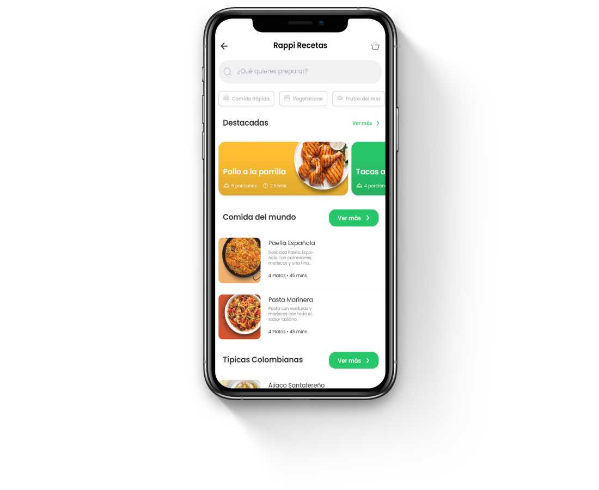

RAPPI RECETAS
2021
Rappi es esa startup que nos abrió un mundo de posibilidades con su
app de domicilios, podemos pedir, casi literalmente, de todo.
Desde comida hasta el SOAT para nuestro vehículo.
¿Qué tal una función que nos permita aprender a cocinar y que además
nos permita tener todos y cada uno de los ingredientes para replicar
a la perfección cada uno de los platos? Presentamos Rappi Recetas.
